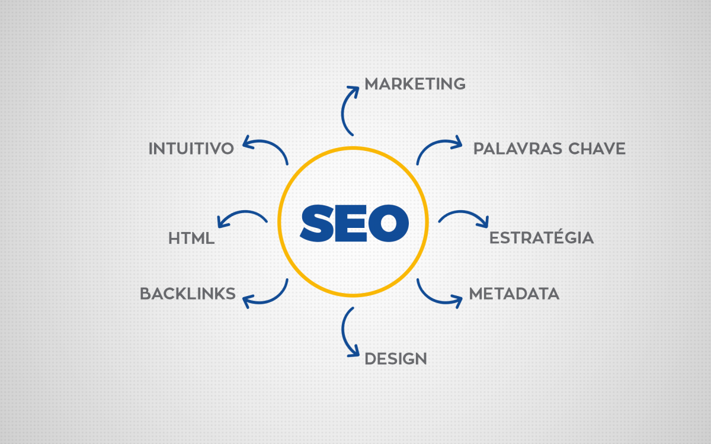

SEO é uma técnica utilizada para dar mais visibilidade ao seu site nos mecanismos de busca como Bing e Google, através da utilização mais eficiente de tags específicas. Esta visibilidade é melhorada quando sua página, devido à correta implementação das técnicas de SEO, alcança a primeira página de uma pesquisa do Google, por exemplo. Entre algumas das técnicas da SEO, é possível citar:

📐 Estruturação da página
A estruturação de uma página pode ser iniciada ao se estudar como os mecanismos de busca compreendem seus títulos, subtítulos e outros elementos semânticos.
Aqueles elementos com maior peso servem como chaves para que os mecanismos de busca possam detectar o que a página aborda.
Por exemplo, em um site de vendas de jogos para videogames, seria interessante manter o título primário, ou h1, como o nome do jogo. Desta forma, quando um usuário procurar pelo jogo online, sua página mostrará de forma direta que é possível obter tal jogo através dela.
Para os subtítulos, ou h2, seria interessante citar a plataforma para qual o jogo foi criado, como PlayStation ou Xbox.
E para subtítulos de menor impacto, pode-se incluir as demais informações do produto.
Também é importante lembrar que o uso excessivo de tags de alto impacto pode causar ineficiência inesperada na sua página.
🔑 Utilização de palavras-chave
É uma das técnicas mais comuns e fáceis de se aplicar. Para isto, basta atentar-se e pesquisar as palavras mais utilizadas pelos usuários ao pesquisar sobre um assunto específico. É possível acrescentar à sua página palavras-chave de cauda-curta (short tail), que são termos ou palavras mais comuns e disputadas, ou palavras-chave de cauda-longa (long tail), que são frases de pelo menos duas palavras. Desta forma, caso o usuário busque por uma frase ou palavra compatível com aquela presente em sua página, as chances de esta aumentar sua posição nos mecanismos de busca são maiores.
🔗 Backlinks
Backlinks são links que referenciam sua página de alguma forma. Seja para páginas acadêmicas ou de entretenimento, ao se referenciar uma página externa, os mecanismos de busca consideram esta ação como um "voto", indicando que a página referenciada é pertinente ao assunto, aumentando sua visibilidade.